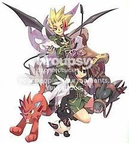
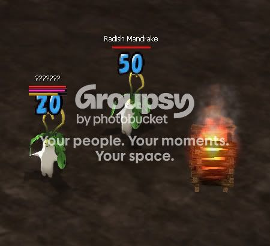
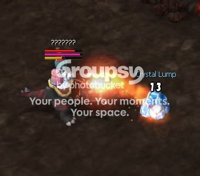

คำตอบจะไม่ขอพูดถึงนะค่ะ ไม่ยากค่ะง่ายมาก อยากให้ทุกคนได้อ่านเนื้อเรื่อง และเข้าใจไปกับมัน
ถ้าขืนบอกลำดับหมด มันก็จะไม่สนุกถูกมั้ย !!!~*
ขอให้ผู้ที่รู้ให้ความร่วมมือ ไม่บอกลำดับการตอบคำถามในกระทู้นี้ค่ะ
How to be Breeder ? ...
สำหรับใครที่จะเป็น Breeder นั้น จะต้องมีคุณสมบัติ ครบตามเงื่อนไขที่กำหนดค่ะ
เงื่อนไขในการเปลี่ยนอาชีพ Breeder
--- ตัวละครจะต้องมี Job lv 30+ ขึ้นไป อาชีพอะไรก็ได้ทั้งคลาส 1 และ 2 --
อ่านดูแล้วเงื่อนไขจะง่ายดายมาก แต่จะมีปัญหากับผู้เล่นบางประเภทค่ะ
การเปลี่ยนอาชีพจะต้องใช้ Job lv 30+ จริงๆ ไม่งั้นจะเปลี่ยนไม่ได้ เช่น.อาชีพชาวนา มี Job lv 30 สามารถทำเควสเปลี่ยนอาชีพ Breeder ได้ แต่..
อาชีพอาเชมิท มี Job lv 20 จะไม่สามารถเปลี่ยนอาชีพ Breeder ได้ หรือ
เล่นอาชีพอาเชมิท Job lv 30 แต่ ข้ามไปเล่นอาชีพมารีโอเนส Job lv 20 ก็ไม่สามารถเปลี่ยนได้เช่นกัน
ดังนั้น การเปลี่ยนอาชีพนี้ จะต้องมี Job lv 30+ ขึ้นไปในขณะนั้นค่ะ โดยอ้างอิงจากอาชีพที่เราเล่นอยู่ ณ ตอนนั้น ค่ะ
เมื่อเงื่อนไขครบตามที่กำหนดไว้นั้น ก็มาดูขึ้นตอนการเปลี่ยนอาชีพกันเลยดีกว่าค่ะ ^^
ขั้นตอนการเปลี่ยนอาชีพ Breeder
1. ให้เราเดินทางไปที่เมือง ฟาอิส ( สำหรับผู้เล่นใหม่ มันคือเมืองทางตะวันออกนะค่ะ )
แล้วไปยังจุดสีเหลืองที่วงไว้ค่ะ ที่นี้เราจะเรียกว่า " Breeder Guild "


2. เมื่อเข้าไปแล้ว ให้เราไปลงทะเบียนเพื่อขอทำการสอบเป็น Breeder กับ Master คนนี้ซะก่อนค่ะ
จากนั้นก็เข้าสู่ขึ้นตอน " สอบสัมภาษณ์ " โดยให้ไปคุยกับ ncp ที่ยืนอยู่ข้างๆหน้าประตูค่ะ
เราจะเข้าไปที่ห้องสอบสัมภาษณ์ ให้เราทำการตอบคำถาม ที่ npc บอกมาค่ะ
หมายเหตุ :: การสอบสัมภาษณ์ จะเป็นการประเมินว่าเรามีคุณสมบัติพอหรือไม่ ดังนั้น
หากตอบผิดแม้แต่ข้อเดียว เราก็จะไม่ผ่าน แต่สามารถไปยืนเรื่องกับ Master เพื่อขอสอบใหม่ได้ค่ะ


3. เมื่อเราสอบผ่านหมด ก็ให้ไปคุยกับ Master เพื่อทำการยื่นขอการทดสอบสมรรถาพ โดยการตอบยืนยันเสร็จหมดแล้ว
ก็ให้คุยเพื่อทำการรับเควส ในการสอบครั้งนี้ค่ะ ( ไม่เสียพ้อยเควสแต่อย่างใด )
หลังจากรับเควสเสร็จแล้ว ให้รีบคุยอีกครั้งเพื่อรับมังกรดำมาขี่ในการสอบค่ะ แล้วรีบเข้าวาร์ปด้านข้างไป
เมื่อเข้ามาแล้วให้รีบขี่มังกร เราจะต้องวิ่งภายในทางวงกต อย่าได้คุยกับ npc ตัวไหนเลยที่ไม่ใช่ดังรูป หรือยืนอยู่ตรงกางวงกลมดังภาพ
ระยะเวลาของเควส 3 นาทีเท่านั้น ต้องรีบทำเวลากันหน่อย
หลังจากที่เราถึงจุดหมายแล้ว เราจะได้รับ ตราสัญลักษณ์ Breeder มาในรูปแบบของ เข็มกลัดค่ะ !!~
หมายเหตุ :: พอรับเควสเสร็จเวลาก็จะเดินตามปรกติ ให้รีบคุยอีกครั้งเพื่อขอรับมังกร
แล้วเข้าวาร์ปด้านข้าง รีบขี่มังกรแล้ววิ่งไปอย่าได้คุยกับ npc ตัวอื่นนอกเหนือในภาพนะค่ะย้ำ !!~


5. ผ่านเสร็จหมดแล้วเราก็จะได้ออกมาเป็น อิสระ *0* เราก็จะได้เป็นบรีเดอร์ แล้วละค่ะ
เมื่อใส่เข็มกลัด ก็จะมีแถบสกิลเพิ่มมาทันที
คุยกับ Master เพื่อขอซื้อชุดบรีเดอร์ ตามเพศของตนเองได้เลยจ้า ~*


ขอบคุณเจ้าปิง ที่ให้ตัวละครมาเปลี่ยนนะค่ะ เพราะตัวละครดิฉันเปลี่ยนไปแล้วลืมเซิฟภาพมา -*- แป่วๆ
#######################################################
ข้อมูลน่ารู้ เกี่ยวกับ Breeder ค่ะ
สกิลพ้อยของ Breeder
สำหรับ สกิลพ้อย ที่หลายๆคนสงสัย อาชีพพิเศษนี้จะไม่ใช้สกิลพ้อยใดๆ ทั้งสิ้น
เมื่อ Job lv ถึงตามที่ระบุไว้ สกิลต่างๆ ที่กำหนด จะโผล่ขึ้นมาเอง โดยที่เราไม่ต้องอัพเองค่ะ
-----------------------------------------------------------------------------------------------------
อุปกรณ์สวมใส่ เครื่องป้องกัน อาวุธ ของ Breeder
Breeder จะสามารถสวมใส่ชุดประจำอาชีพได้ก็ต่อเมื่อ ใส่เข็มกลัด Breeder ไปแล้วเท่านั้น
เมื่อถอดออกก็จะทำให้ชุดประจำอาชีพ ถูกถอดออกเช่นกันค่ะ
สำหรับอุปกรณ์เครื่องป้องกันต่างๆ ก็จะยังสามารถใส่ได้อยู่ไม่ทุกชนิด ชุดแฟชั่นยังสามารถใส่ได้ปรกติค่ะ
รวมถึงชุดที่ใช้ในการเก็บเลเวลที่พวกเราใส่อยู่กันปรกติ ก็สามารถใส่ได้ แต่ก็ไม่ทุกชุดค่ะ
อาวุธ ของ Breeder นี้สำคัญมาก เมื่อเราใส่เข็มกลัด Breeder แล้ว เราจะใส่อาวุธได้แค่ 2 ชนิดเท่านั้น
นั้นก็คือ " ค้อน / ขวาน / อาวุธขว้าง / มีด " ค่ะ อาวุธแฟชั่น etc ต่างๆ ใส่ได้ปรกติค่ะ [จากการทดสอบกับอาชีพ เบรดมาสเตอร์ ]
คิดว่าอาชีพอื่นๆ ก็จะต้องใส่อาวุธได้ตามนี้แน่นอน เพราะว่าจากที่ลองโดยอาชีพเบรดมาสเตอร์
เมื่อเป็น Breeder แล้ว มันใส่อาวุธ ดาบ - โล่ ไม่ได้เลยค่ะ ^^ ขอให้ระวังตรงจุดนี้ด้วย
แต่สกิลของอาชีพเก่ายังใช้ได้ปรกติค่ะ ยกเว้นสกิลที่จำกัดด้านอาวุธนะค่ะ[GM]Icy เขียน:Ham Ham
Vulcan Tomahawk
Bloody Rose
Golden Spike
Chaos Cleaver
Seventh Heaven
Ancient Throw
^
^
อาวุธ 90 ที่ Breeder สามารถใส่ได้ค่ะ
----------------------------------------------------------------------------------------------------
Exp ของ Job lv อาชีพ Breeder
Job lv ของอาชีพนี้ตันอยู่ที่ job lv 30 เท่านั้นค่ะ โดยความยากง่าย แล้ว
ให้ไปเทียบกับ job lv คลาส 2 ได้เลยค่ะ ขึ้นอืดแค่ไหนพวกเราคงรู้กัน
แต่แค่ถึง job lv 30 ก็คงไม่ยากจนเกินไปนะค่ะ
----------------------------------------------------------------------------------------------------
EXP / Job lv ไม่ปนกันหรือหายไป เมื่อถอดออกและใส่ประดับใหม่
คอนเฟิมว่าไม่หายไปเมื่อถอดประดับหรือปนกับอาชีพเก่าของเราค่ะ
จะมีแค่ เลเวลของตัวละครเท่านั้นที่ยังปนกันอยู่ แต่ในส่วนของ job lv นั้นจะแยกอาชีพกันเลย
ถ้าเราถอดประดับบรีเดอร์ออก หรือใส่ใหม่ ก็จะเป็นค่าปรกติของอาชีพนั้นๆ เช่น
เล่นบรีเดอร์ไป job lv 10 / 20% ถอดออกหรือใส่ใหม่ก็ยังคงเดิม ค่ะ ^^
#######################################################
วิธีเอามังกรดำ
shiawase เขียน:เอามังกรดำ
-ต้องใส่เครื่องประดับบลีดเดอร์ตลอดเควส
-ต้องมีสกิลบลีดเดอร์จ็อบ13
-ไปกิลด์บลีดเดอร์ คุยรับเควส
-ไปเกาะไมไม คุยกะเหล่าลีดเดอร์ ได้เควส ตบกะมอน3ตัว(อาร์ค หมาป่าเงิน หมาป่าทอง)
-ตบชนะ กลับไปคุยกะเหล่าบลีดเดอร์ที่เกาะไมไม ก็ได้รับมังกรดำ
ตามนี้เลยค่ะ ขี้เกียดพิมพ์ 5555+ ( อ้อ มอนโหดหน่อยนุงนะค่ะ สำหรับพวกจ๊อบแรก อย่าไปยุ่ง )
#######################################################[/quote]
สกิล Breeder
Nimble เขียน:
หลังจากเปลี่ยนเป็น Breeder แล้วเรามาดูกันดีกว่าว่า Breeder Skill ต่างๆมีอะไรบ้าง แน่นอนว่า skill เกือบทั้งหมดนั้นเกี่ยวกับสัตว์เลี้ยงเป็นหลักแน่นอน
ก่อนอื่นนั้นต้องบอกกันล่วงหน้าเล็กน้อยคือ Skill ต่างๆของ Breeder นั้นจะมีเพียง level 1 เท่านั้นทุก skill และจะได้รับ Skill มาอัตโนมัติเมื่อมี Job Level ของ Breeder ถึงที่กำหนดเอาไว้ กล่าวคือผู้เล่นจะไม่สามารถเลือกได้ว่าจะ up skill อะไรบ้างนั่นเอง แต่ก็ถือว่าเป็นการดีเหมือนกันสำหรับผู้เล่นที่คิดไม่ออกจะ up อะไรดี
เรามาดูกันดีกว่าว่า Skill ทั้งหมด 30 Job รวม 12 Skill มีอะไรบ้าง สำหรับขาคนรักสัตว์รับรองว่าชอบแน่นอน
Go!
เงื่อนไข : Job Level 1
ชนิด : Active Skill (ระบุเป้าหมายที่เป็นศัตรู)
สั่งให้ Pet เข้าโจมตีเป้าหมายที่กำหนดเอาไว้
อย่างไรก็ตาม การที่ Pet โจมตีเป้าหมายนั้นในระบบของ ECO ถือเป็นการโจมตีที่ไม่เกี่ยวกับผู้เล่นใดๆ หาก Pet กำจัดเป้าหมายลงได้โดยที่ผู้เล่นไม่ร่วมโจมตีเป้าหมายนั้นเลย ผู้เล่นจะไม่ได้รับ EXP, Item ใดๆจาก Monster แม้แต่นิดเดียว ในขณะเดียวกัน การที่ Pet ไปโจมตีเป้าหมายใดๆก็ไม่ทำให้ผู้ที่กำลังโจมตีเป้าหมายนั้นๆอยู่ถูกแย่งค่า EXP ไปแม้แต่นิดเดียว ซึ่งผลนี้รวมไปถึงตอนที่ผู้เล่นทำการขี่ Pet ด้วยเช่นมังกร, หนอนซิ่ง ผู้เล่นจะไม่ได้รับค่า Exp, Item ใดๆเลย
Come Back!
เงื่อนไข : Job Level 3
ชนิด : Active Skill (ไม่ต้องระบุเป้าหมาย)
บังคับให้ Pet หยุดโจมตีและเดินกลับมาหาเจ้าของ บางครั้งเมื่อสั่งและ Pet โดนโจมตีอาจจะไม่ยอมกลับมา ให้ผู้เล่นเดินซักก้าวสองก้าว Pet จะยอมวิ่งกลับมา อย่างไรก็ดี หลังจาก 3-4 วินาทีหลังสั่ง Come Back! Pet จะหันกลับไปโต้ตอบศัตรูอีกครั้ง
Biology
เงื่อนไข : Job Level 5
ชนิด : Passive Skill
ทำให้ Skill อื่นๆ 7 อย่างมีผลดีขึ้นในการฝึกสัตว์เลี้ยง - ยังไม่ทราบผลที่แน่ชัดของ Skill นี้เท่าไหร่ อาจจะหมายถึงผลของ Skill เฉพาะตัวของสัตว์เลี้ยงอย่าง Glittering Body, Continue Shooting หรือเปล่าก็ยังไม่อาจทราบได้ จากการ Test ก็ยังไม่เห็นผลการเปลี่ยนแปลงอะไรนัก
Belief Proof
เงื่อนไข : Job Level 8
ชนิด : Active Skill (ไม่ต้องระบุเป้าหมาย)
สั่งให้ Pet ขยับท่าทางต่างๆตามที่ต้องการ เอาไว้ให้ Pet เล่นท่าทางแปลกๆได้ด้วยนะ
รายการที่สั่งได้ ..... เหมือนตอนสั่งบนสวนลอยฟ้าเลยแฮะHeal Fire
เงื่อนไข : Job Level 10
ชนิด : Active Skill (ระบุพื้นที่ที่ต้องการ)
ใช้ SP : 25
สร้างแคมป์ไฟขนาดเล็กขึ้นมายังจุดที่กำหนด ซึ่งแคมป์ไฟนี้จะเพิ่ม HP 50 หน่วยให้กับ Pet, Marionette, Charm Monster แต่เพิ่ม HP 20 หน่วยให้กับผู้เล่น โดยเพิ่มทุกๆ 5 วินาทีเป็นระยะเวลา 60 วินาที กินพื้นที่บริเวณ 5*5
ไม่ต้องมีเศษไม้ก็สามารถใช้ได้ อย่างไรก็ดี อาจจะมีการเปลี่ยนแปลงในภายหลังว่าต้องใช้ Piece of Tree ในการใช้งานก็เป็นได้ คงต้องดูกันหลังอาชีพนี้ออกมาโลดแล่นใน Saga 6
*เมื่อเปรียบเทียบกับ Healing Tree ของ Farmer นั้น Heal Fire ชนะขาดด้วยการใช้ SP ที่น้อยกว่า เวลาร่ายที่เร็วกว่า แม้จะด้อยกว่าด้านการฟื้น HP ให้ผู้เล่นก็ตามที*
ที่เห็น Heal ทีละ 20 น่ะผู้เล่นนะ ที่ 50 น่ะไชเท้า(pet)
Mastere (Ride)
เงื่อนไข : Job Level 13
ชนิด : Passive Skill
Skill สำคัญแสดงถึงคุณสมบัติที่จะสามารถครอบครอง Dark Dragon ไว้ได้อย่างถูกต้อง และเพิ่มความสามารถของสัตว์เลี้ยงชนิดขับขี่ให้สูงขึ้น (ผลการเพิ่มความสามารถยังไม่สามารถระบุได้แน่ชัด เนื่องจากไม่แสดงผลให้เห็นในหน้า Status ของ Pet)
เมื่อมี Skill นี้ผู้เล่นจะสามารถไปทำ Quest รับ Dark Dragon จากเจ้าหน้าที่สมาคม Breeder ได้
Goat[/b]
เงื่อนไข : Job Level 14
ชนิด : Active Skill (ระบุเป้าหมายที่เป็น Pet, ผู้เล่น)
ใช้ SP : 12
เพิ่มพลังโจมตีให้กับเป้าหมายที่เป็น Pet หรือผู้เล่นชั่วคราว ปริมาณที่เพิ่มขึ้นยังไม่แน่ชัด มีผลถึง 60 วินาทีเลยทีเดียว สำหรับผู้เล่นที่ชอบโจมตีแรงๆอาจจะ Buff ใส่ตัวเองกันก็ได้
Grow Up
เงื่อนไข : Job Level 15
ชนิด : Passive Skill
เพิ่มอัตราการเติบโตของ Pet ทำให้สามารถฝึกได้ง่ายขึ้น งานนี้ไม่ต้องฝึกกันแต่ในโรงเรยนแล้วล่ะ ต้องขออภัยอย่างยิ่งที่ไม่สามารถทดสอบได้ว่าเมื่อรวมกับตอนอยู่ในโรงเรียน (Breeding + Grow Up) จะทำให้สามารถฝึกได้เร็วขึ้นกว่าเดิมไหมเนื่องจากอัตราการเติบโตของ Pet เป็นแบบสุ่มMetamophosis
เงื่อนไข : Job Level 20
ชนิด : Active Skill (ไม่ต้องระบุเป้าหมาย)
ใช้ SP : 25
แปลงร่างตัวเองให้เป็นเหมือนกับ Pet ที่ใช้อยู่ในขณะนั้น แต่ไม่สามารถแปลงเป็น Marionette ที่เรียกออกมาจาก Skill Marionette Call หรือ Monster ที่ใช้ Skill Monster Charming จับมาได้ รวมถึง Pet ที่ใช้ขี่เช่นมังกรหรือหนอนซึ่งก็ไม่สามารถแปลงร่างได้
การแปลงร่างจะไม่จำกัดเวลาทำให้ผู้เล่นสามารถอยู่ในร่าง Pet ได้ตลอดเวลา แต่เมื่อทำการเปลี่ยนแผนที่หรือกดใช้ Skill Metamophosis อีกครั้งก็จะกลับร่างเดิม
หลังการแปลงร่างแล้วแม้ผู้เล่นจะเก็บ Pet ไปก็จะยังคงอยู่ในร่าง Pet ตัวเดิม
*มี Pet บางชนิดที่เมื่อแปลงร่างแล้วผู้เล่นจะมีขนาดตัวใหญ่กว่า Pet เช่น Puchi Crawler*
คนเล่นก็เริ่มสับสนละ ไหน pet ไหนคน
State Up
เงื่อนไข : Job Level 23
ชนิด : Passive Skill
เพิ่มความสามารถของ Pet ให้สูงขึ้น (ความสามารถที่เพิ่มขึ้นจะไม่แสดงให้เห็นในหน้าจอ Status)
ผลที่เพิ่มขึ้นจะมีค่า HP, Avoid, Hit
Acrobate Vasion
เงื่อนไข : Job Level 27
ชนิด : Active Skill (ไม่ต้องระบุเป้าหมาย)
ใช้ SP : 25
Skill ที่ทำให้ Breeder ไม่ใช่ผู้ที่รักสัตว์เลี้ยงยิ่งชีพอีกต่อไป เมื่อใช้ Skill นี้จะทำให้ศัตรูที่โจมตีเราอยู่หันไปโจมตี Pet แทน เหมาะสำหรับการใช้ฝึกค่าด้านการตั้งรับของ Pet มาก
(มีการระบุว่าเมื่อใช้จะมีผลสั่งให้ Monster ที่อยู่รอบตัวของ Pet เข้ามาโจมตี Pet ซึ่งถ้ามีโอกาสจะทดสอบในจุดนี้ให้มั่นใจอีกครั้งหนึ่ง)Pet Cancle (Pet Delay Cancle)
เงื่อนไข : Job Level 30
ชนิด : Active Skill (ไม่ต้องระบุเป้าหมาย)
ใช้ SP : 36
ทำให้ Pet ได้รับผลของ Skill Delay Cancle level 3 ส่งผลให้ Pet สามารถโจมตีได้อย่างรวดเร็วขึ้น อย่างไรก็ตาม Delay การใช้ skill ของ pet จะไม่ลดลงแต่อย่างใด
Prominence
เงื่อนไข : เมื่อขี่ Dark Dragon
ชนิด : Active Skill (ไม่ต้องระบุเป้าหมาย)
ใช้ SP : 25
สั่ง Dark Dragon โจมตีเป็นรูปพัดด้านหน้าตัวเองเป็นจำนวน 2 ครั้ง ด้วยพลังโจมตี 250% (คาดว่าเป็นพลังโจมตีทางกายภาพ)
มังกรไฟของแท้ต้องพ่นไฟได้ ..... แรงม๊าก!
จาก skill ต่างๆดังกล่าวทำให้แม้จะเป็นสาย Fighter หรือ Spell User ก็สามารถเข้ามามีบทบาทในการใช้ Pet สนับสนุนในการเล่นได้มากขึ้น อาจจะทำให้เดิมทีที่มีเพียงสาย Back Packer ที่โดดเด่นเป็นพิเศษเรื่อง Pet ดูด้อยลงบ้าง
แต่ถึงกระนั้น Breeder ก็ไม่มีทักษะที่จะสั่งให้ Pet ใช้ Skill เฉพาะทางอย่าง Rage About, Grinder Attack ได้อยู่ดี แถมยังต้องเป็น Breeder ตลอดเวลาทำให้เสีย Bonus Status ไปมากมายรวมถึงอาวุธที่ Breeder อาจจะใส่ไม่ได้อีกด้วย ทำให้สาย Back Packer ไม่ได้เสียเปรียบอะไรจากเดิมเท่าไหร่นัก
หากข้อมูลดังกล่าวมีอะไรผิดพลาดติแนะนำมาได้นะงิ
อนึ่ง ชื่อ Skill มีคุยกับทางทีมงานให้ปรับเปลี่ยนอยู่ก็ไม่แน่ใจว่าจะเป็นอย่างไร .... Pet Cancle .... ยกเลิกการใช้ Pet เรอะ =A=" ไหนจาก Goat อีก แพะภูเขา?